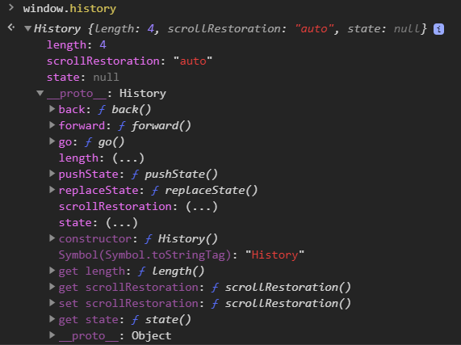

Created by Alexander Fraltsov
The HTML5 history API is a standardized way to manipulate the browser history via script.
Part of this API — navigating the history — has been available in previous versions of HTML.
The new parts in HTML5 include a way to add entries to the browser history, to visibly change the URL in the browser location bar (without triggering a page refresh), and an event that fires when those entries are removed from the stack by the user pressing the browser’s back button.
This means that the URL in the browser location bar can continue to do its job as a unique identifier for the current resource, even in script-heavy applications that don’t ever perform a full page refresh.
To move backward through history:
window.history.back()
This acts exactly as if the user clicked on the Back button in the browser toolbar.
Similarly, you can move forward (as if the user clicked the Forward button), like this:
window.history.forward()
You can use the go() method to load a specific page from session history, identified by its relative position to the current page (The current page's relative position is 0).
For example, to move back one page (the equivalent of calling back()):
window.history.go(-1)
To move forward a page, just like calling forward():
window.history.go(1)
And, finally either of the following statements will reload the current page:
window.history.go(0)
window.history.go()
You can determine the number of pages in the history stack by looking at the value of the length property:
let numberOfEntries = window.history.length
let currentState = window.history.state
Returns an any value representing the state at the top of the history stack. This is a way to look at the state without having to wait for a popstate event.
The value of the state property is null until you call pushState() or replaceState().
pushState()
window.history.pushState(state, title, url);
In an HTML document, the history.pushState() method adds a state to the browser's session history stack.
replaceState()
window.history.replaceState(state, title, url);
The replaceState() method modifies the current history entry, replacing it with the state objects, title, and URL passed in the method parameters.
This method is particularly useful when you want to update the state object or URL of the current history entry in response to some user action.
window.history.pushState(state, title, url);
window.history.replaceState(state, title, url);
Parameter: state
The state object is a JavaScript object which is associated with the new history entry created by pushState(). And we can subsequently pass this object to the replaceState() method.
Whenever the user navigates to the new state, a popstate event is fired, and the state property of the event contains a copy of the history entry's state object.
window.history.pushState(state, title, url);
window.history.replaceState(state, title, url);
Parameter: title
Most browsers currently ignores this parameter, although they may use it in the future.
Passing the empty string here should be safe against future changes to the method.
window.history.pushState(state, title, url);
window.history.replaceState(state, title, url);
Parameter: url
The new history entry's URL is given by this parameter. The browser won't attempt to load this URL after a call to pushState(), but it might attempt to load the URL later, for instance after the user restarts the browser.
This parameter is optional; if it isn't specified, it's set to the document's current URL.
The new URL does not need to be absolute; if it's relative, it's resolved relative to the current URL.
A popstate event is dispatched to the window every time the active history entry changes. If the history entry being activated was created by a call to pushState or affected by a call to replaceState, the popstate event's state property contains a copy of the history entry's state object.
window.onpopstate = funcRef;
Where funcRef is a handler function.